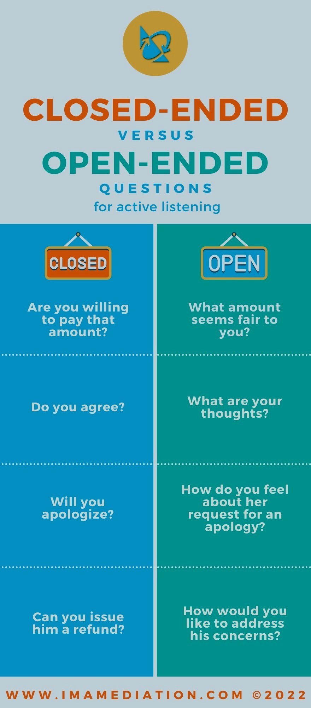

Questioning
Questioning is a strategy most of us have used almost our whole lives, and is pretty self explanatory in its definition. This strategy can combine with clarifying to gain a better understanding of what message is being sent. When used correctly, questioning can help someone collect better information, think critically, manage people in a work setting effectively, and even build relationships.
The article from MindTools delivers descriptions of types of questions, and how to use them effectively. The first two are open and closed questions, which are described in the clarifying section. This article expands on them to talk about how open questions are often conversation starters while closed questions only need a short answer, and when used wrong can accidentally end conversations. Funnel questions are a valuable way to figure out important details in a complex problem or story. The resource recommends that funneling should start with closed questions to break down the message, and then use open questions to find the important details. It also includes an interesting example using funnel questions to gain details about a fight from a vague story. Probing questions are similar to funnel in purpose, but utilizes specific phrasing to gain information. The resource uses the word “exactly” as an example of probing. Instead of asking, “Where do I hand in this assignment?” and getting an answer like, “The dropbox”, a question like, “Where exactly do I hand this assignment in?” can get a clearer answer like, “In the assignment 3 dropbox under assignments.” MindTools also covers leading questions, which leads the receiver to follow the sender’s line of thinking by using assumptions or opinions within the question, and rhetorical questions, which are used to engage the listener by offering commentary or compliments in the form of a question.
This resource is well detailed, and can be read through for specific examples of each of these questions, as well as tips on how to use them effectively. The section at the end explains that questions help build relationships by hearing and understanding another person’s opinions and thoughts. When messages are clarified through questions, both parties avoid misunderstanding, and broaden their perspectives, lessening the potential for negative consequences of miscommunication. The resource also reminds the reader that body language, and allowing someone time to think through a question are equally as important to communication as the questions themselves.
